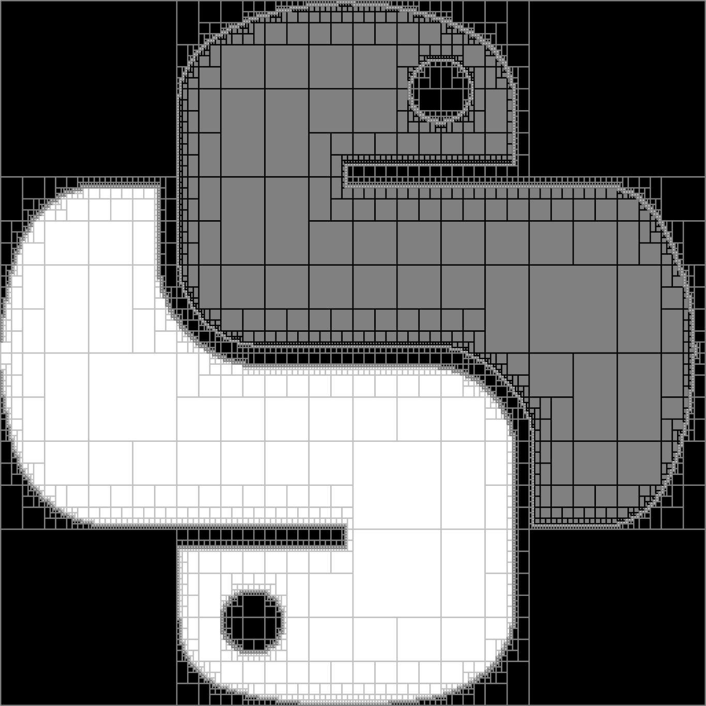

pyibex 
1.5
Get Started
Basic Types
Installation
Python API
pyibex
Docs
»
Index
A
|
B
|
C
|
D
|
E
|
F
|
I
|
L
|
M
|
N
|
O
|
P
|
R
|
S
|
U
|
V
A
assign() (pyibex.Interval method)
(pyibex.IntervalVector method)
B
backward() (pyibex.Function method)
bisect() (pyibex.Interval method)
(pyibex.IntervalVector method)
C
clear() (pyibex.IntervalVector method)
complementary() (pyibex.Interval method)
(pyibex.IntervalVector method)
contains() (pyibex.Interval method)
(pyibex.IntervalVector method)
contract() (pyibex.Ctc method)
(pyibex.CtcCompo method)
(pyibex.CtcFixPoint method)
(pyibex.CtcFwdBwd method)
(pyibex.CtcInverse method)
(pyibex.CtcNotIn method)
(pyibex.CtcQInter method)
(pyibex.CtcUnion method)
copy() (pyibex.Interval method)
(pyibex.IntervalVector method)
Ctc (class in pyibex)
ctc_in() (pyibex.SepCtcPair method)
(pyibex.SepFwdBwd method)
ctc_out() (pyibex.SepCtcPair method)
(pyibex.SepFwdBwd method)
CtcCompo (class in pyibex)
CtcFixPoint (class in pyibex)
CtcFwdBwd (class in pyibex)
CtcInverse (class in pyibex)
CtcNotIn (class in pyibex)
CtcQInter (class in pyibex)
CtcUnion (class in pyibex)
D
diam() (pyibex.Interval method)
(pyibex.IntervalVector method)
diff() (pyibex.Interval method)
(pyibex.IntervalVector method)
E
empty() (pyibex.IntervalVector method)
eval() (pyibex.Function method)
eval_matrix() (pyibex.Function method)
eval_vector() (pyibex.Function method)
extr_diam_index() (pyibex.IntervalVector method)
F
Function (class in pyibex)
I
inflate() (pyibex.Interval method)
(pyibex.IntervalVector method)
init() (pyibex.IntervalVector method)
interior_contains() (pyibex.Interval method)
(pyibex.IntervalVector method)
intersects() (pyibex.Interval method)
(pyibex.IntervalVector method)
Interval (class in pyibex)
IntervalVector (class in pyibex)
is_bisectable() (pyibex.Interval method)
(pyibex.IntervalVector method)
is_degenerated() (pyibex.Interval method)
is_disjoint() (pyibex.Interval method)
(pyibex.IntervalVector method)
is_empty() (pyibex.Interval method)
(pyibex.IntervalVector method)
is_flat() (pyibex.IntervalVector method)
is_interior_subset() (pyibex.Interval method)
(pyibex.IntervalVector method)
is_strict_interior_subset() (pyibex.Interval method)
(pyibex.IntervalVector method)
is_strict_subset() (pyibex.Interval method)
(pyibex.IntervalVector method)
is_strict_superset() (pyibex.Interval method)
(pyibex.IntervalVector method)
is_subset() (pyibex.Interval method)
(pyibex.IntervalVector method)
is_superset() (pyibex.Interval method)
(pyibex.IntervalVector method)
is_unbounded() (pyibex.Interval method)
(pyibex.IntervalVector method)
is_zero() (pyibex.IntervalVector method)
L
lb() (pyibex.Interval method)
(pyibex.IntervalVector method)
M
mag() (pyibex.Interval method)
(pyibex.IntervalVector method)
max_diam() (pyibex.IntervalVector method)
mid() (pyibex.Interval method)
(pyibex.IntervalVector method)
mig() (pyibex.Interval method)
(pyibex.IntervalVector method)
min_diam() (pyibex.IntervalVector method)
N
nb_arg() (pyibex.Function method)
nb_var (pyibex.Ctc attribute)
(pyibex.Sep attribute)
O
overlaps() (pyibex.Interval method)
(pyibex.IntervalVector method)
P
perimeter() (pyibex.IntervalVector method)
put() (pyibex.IntervalVector method)
R
rad() (pyibex.Interval method)
(pyibex.IntervalVector method)
rel_distance() (pyibex.Interval method)
(pyibex.IntervalVector method)
resize() (pyibex.IntervalVector method)
S
Sep (class in pyibex)
separate() (pyibex.Sep method)
(pyibex.SepCtcPair method)
(pyibex.SepFwdBwd method)
(pyibex.SepInter method)
(pyibex.SepInverse method)
(pyibex.SepNot method)
(pyibex.SepQInter method)
(pyibex.SepUnion method)
SepCtcPair (class in pyibex)
SepFwdBwd (class in pyibex)
SepInter (class in pyibex)
SepInverse (class in pyibex)
SepNot (class in pyibex)
SepQInter (class in pyibex)
SepUnion (class in pyibex)
set_empty() (pyibex.Interval method)
(pyibex.IntervalVector method)
size() (pyibex.IntervalVector method)
sort_indices() (pyibex.IntervalVector method)
subvector() (pyibex.IntervalVector method)
U
ub() (pyibex.Interval method)
(pyibex.IntervalVector method)
V
volume() (pyibex.IntervalVector method)